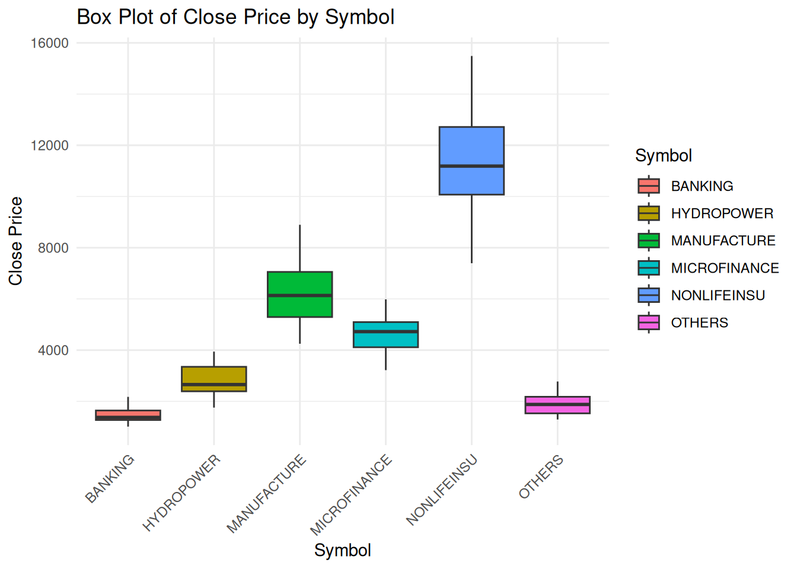
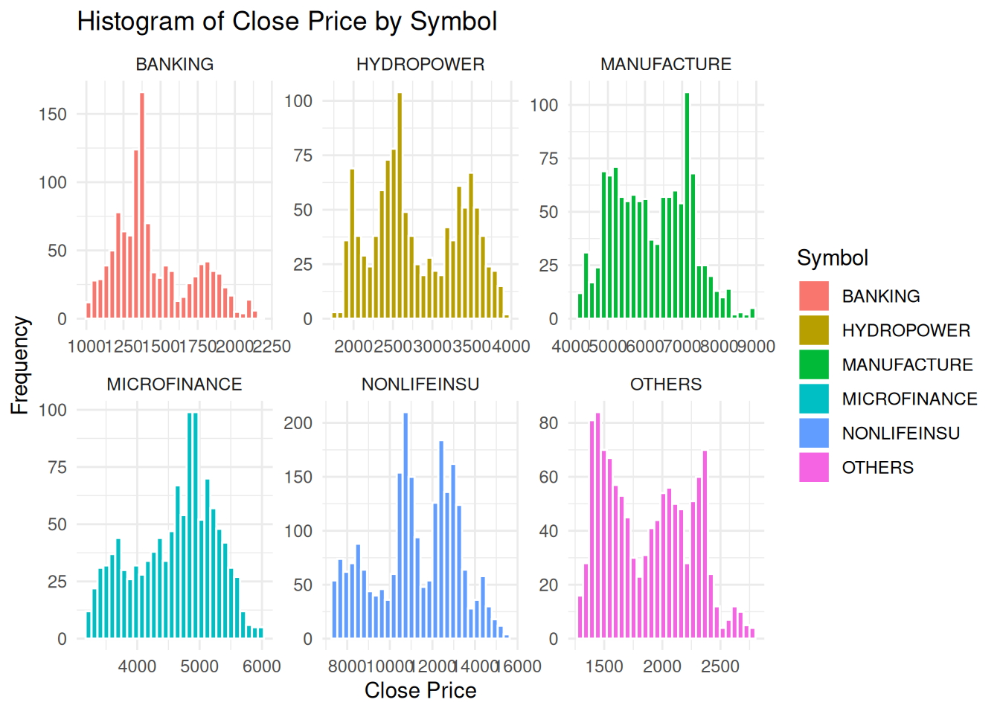
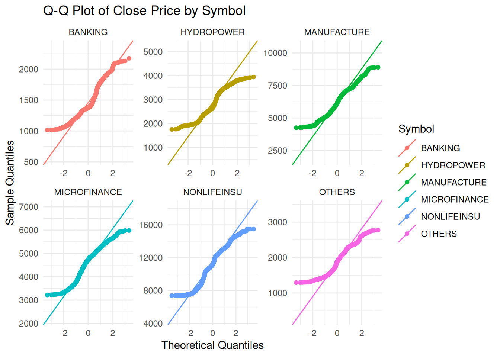
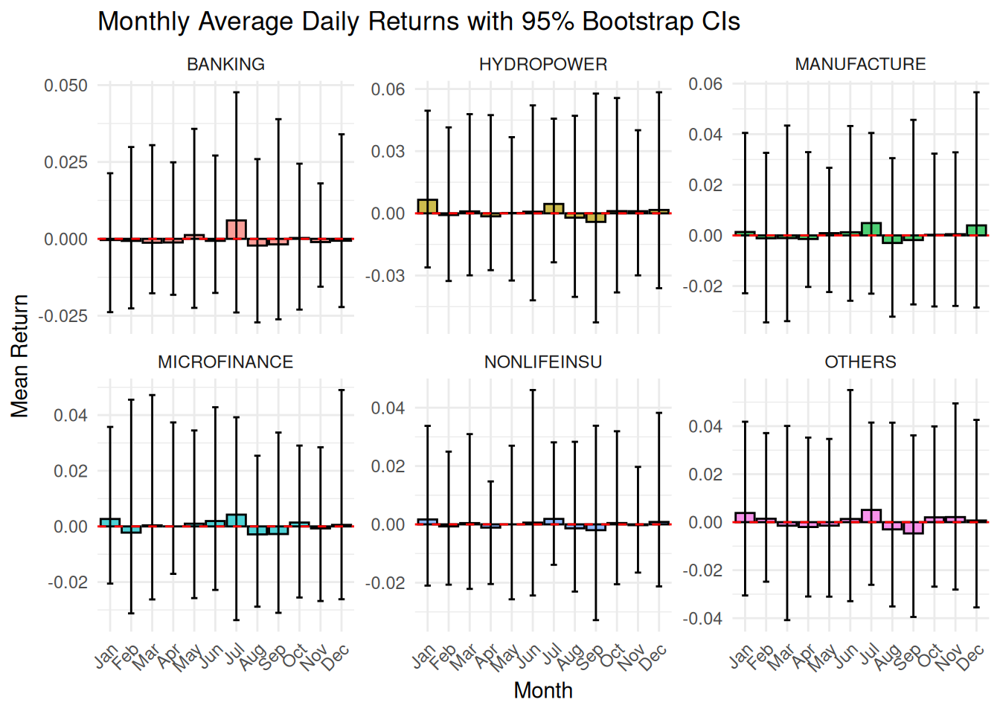
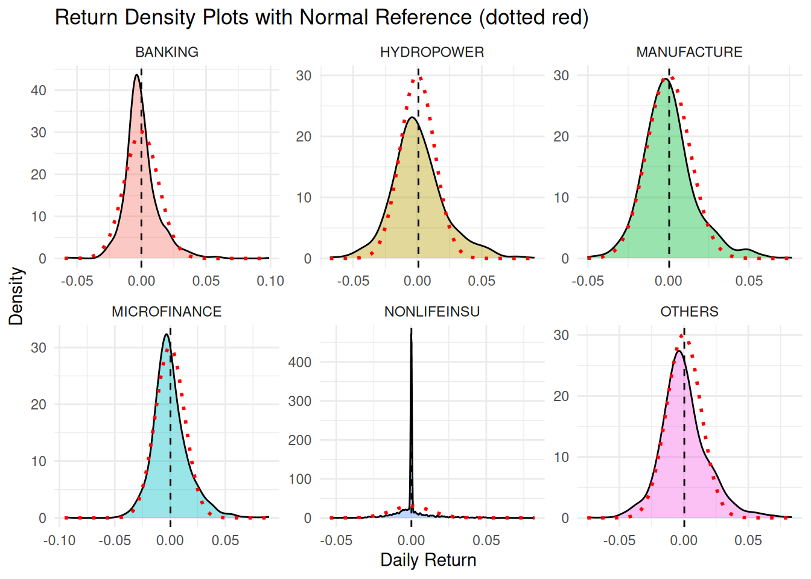
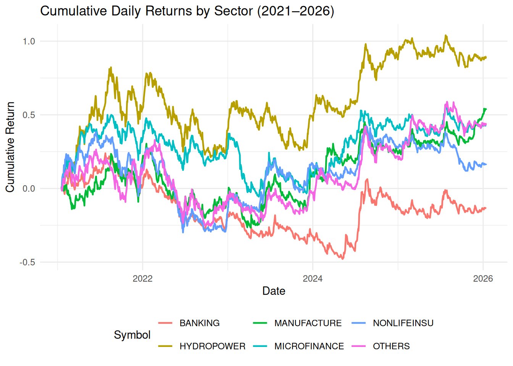
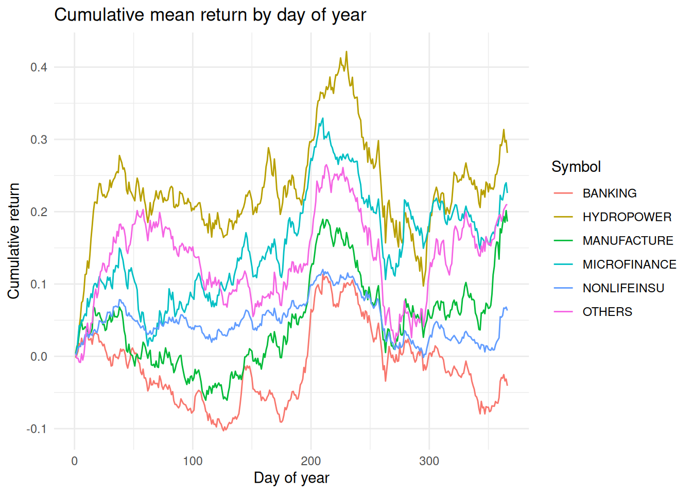
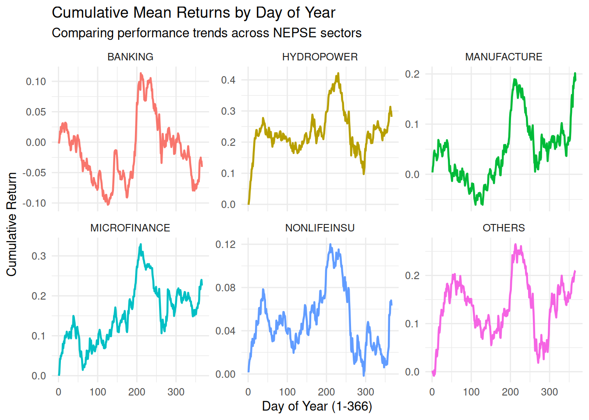

library(dplyr)
library(ggplot2)
library(lubridate)
library(moments)
library(boot)
library(WRS2)
library(lmPerm)
library(tidyr)
library(purrr)NEPSE-EDA
Banking Sector Data
nepse_data <- read.csv("./data/nepse.csv")
# sort data in ascending order by Date
nepse_data <- nepse_data |>
mutate(Date = as.Date(Date)) |>
arrange(Date,)
head(nepse_data,5) Symbol Date Open High Low Close Percent.Change
1 MANUFACTURE 2021-01-17 6010.30 6066.12 5976.65 6023.84 0.00 %
2 BANKING 2021-01-17 1741.16 1748.16 1728.01 1735.57 0.00 %
3 NONLIFEINSU 2021-01-17 10675.25 10754.86 10596.60 10754.86 0.00 %
4 NONLIFEINSU 2021-01-17 10675.25 10754.86 10596.60 10754.86 0.00 %
5 OTHERS 2021-01-17 1824.25 1857.90 1820.72 1850.40 0.00 %
Volume Turn.Over
1 - -
2 - -
3 - -
4 - -
5 - -Exploratory Data Analysis
Box Plot
# box plots
ggplot(nepse_data, aes(x = Symbol, y = Close, fill = Symbol)) +
geom_boxplot() +
labs(title = "Box Plot of Close Price by Symbol",
x = "Symbol",
y = "Close Price") +
theme_minimal() +
theme(axis.text.x = element_text(angle = 45, hjust = 1))
Histogram
ggplot(nepse_data, aes(x = Close, fill = Symbol)) +
geom_histogram(bins = 30, color = "white") +
facet_wrap(~Symbol, scales = "free") + # 'scales = "free"' allows different axes per category
labs(title = "Histogram of Close Price by Symbol",
x = "Close Price",
y = "Frequency") +
theme_minimal()
Q-Q Plot
ggplot(nepse_data, aes(sample = Close, color = Symbol)) +
stat_qq() +
stat_qq_line() +
facet_wrap(~Symbol, scales = "free") +
labs(title = "Q-Q Plot of Close Price by Symbol",
x = "Theoretical Quantiles",
y = "Sample Quantiles") +
theme_minimal()
Probability Distribution or Return
# Calculate daily percentage returns
sector_returns <- nepse_data |>
group_by(Symbol) |>
arrange(Date) |>
mutate(Return = (Close - lag(Close)) / lag(Close)) |>
filter(!is.na(Return)) # Remove the first row which becomes NA
# Summarize distribution metrics
distribution_stats <- sector_returns |>
summarise(
Mean = mean(Return),
SD = sd(Return),
Skewness = skewness(Return),
Kurtosis = kurtosis(Return)
)
print(distribution_stats)# A tibble: 6 × 5
Symbol Mean SD Skewness Kurtosis
<chr> <dbl> <dbl> <dbl> <dbl>
1 BANKING -0.000117 0.0132 1.14 8.24
2 HYDROPOWER 0.000770 0.0209 0.615 4.44
3 MANUFACTURE 0.000458 0.0162 0.798 4.83
4 MICROFINANCE 0.000365 0.0164 0.802 6.58
5 NONLIFEINSU 0.0000723 0.0114 0.976 9.88
6 OTHERS 0.000376 0.0184 0.638 4.87Monthly Average Returns with Confidence Intervals (Bar Plot)
library(lubridate)
# Compute monthly means and bootstrap CIs
monthly_stats <- sector_returns %>%
mutate(Month = month(Date, label = TRUE)) %>%
group_by(Symbol, Month) %>%
summarise(
Mean = mean(Return),
CI_lower = quantile(Return, 0.025),
CI_upper = quantile(Return, 0.975),
.groups = "drop"
)
ggplot(monthly_stats, aes(x = Month, y = Mean, fill = Symbol)) +
geom_col(position = position_dodge(0.9), color = "black", alpha = 0.7) +
geom_errorbar(aes(ymin = CI_lower, ymax = CI_upper),
position = position_dodge(0.9), width = 0.3) +
geom_hline(yintercept = 0, linetype = "dashed", color = "red") +
facet_wrap(~Symbol, scales = "free_y") +
labs(title = "Monthly Average Daily Returns with 95% Bootstrap CIs",
x = "Month", y = "Mean Return") +
theme_minimal() +
theme(axis.text.x = element_text(angle = 45, hjust = 1),
legend.position = "none")
Density Plots of Returns with Normal Overlay
# Compute sector-wise mean and sd for normal curves
norm_params <- sector_returns %>%
group_by(Symbol) %>%
summarise(mu = mean(Return), sigma = sd(Return))
ggplot(sector_returns, aes(x = Return, fill = Symbol)) +
geom_density(alpha = 0.4, adjust = 1.5) +
geom_vline(data = norm_params, aes(xintercept = mu),
linetype = "dashed", color = "black") +
# Add normal density for reference
geom_function(fun = dnorm,
args = list(mean = first(norm_params$mu),
sd = first(norm_params$sigma)),
color = "red", linetype = "dotted", size = 1) +
facet_wrap(~Symbol, scales = "free") +
labs(title = "Return Density Plots with Normal Reference (dotted red)",
x = "Daily Return", y = "Density") +
theme_minimal() +
theme(legend.position = "none")Warning: Using `size` aesthetic for lines was deprecated in ggplot2 3.4.0.
ℹ Please use `linewidth` instead.
Time Series of Cumulative Returns by Sector
cumulative_returns <- sector_returns %>%
group_by(Symbol) %>%
arrange(Date) %>%
mutate(Cumulative = cumsum(Return)) %>%
ungroup()
ggplot(cumulative_returns, aes(x = Date, y = Cumulative, color = Symbol)) +
geom_line(size = 0.8) +
labs(title = "Cumulative Daily Returns by Sector (2021–2026)",
x = "Date", y = "Cumulative Return") +
theme_minimal() +
theme(legend.position = "bottom")
Heatmap of Mean Returns by Sector and Month
heatmap_data <- sector_returns %>% mutate(Month = month(Date, label = TRUE)) %>% group_by(Symbol, Month) %>% summarise(Mean_Return = mean(Return), .groups = "drop")
ggplot(heatmap_data, aes(x = Month, y = Symbol, fill = Mean_Return)) + geom_tile(color = "white") + scale_fill_gradient2(low = "red", mid = "white", high = "steelblue", midpoint = 0, name = "Mean Return") + geom_text(aes(label = round(Mean_Return, 3)), color = "black", size = 3) + labs(title = "Heatmap of Average Daily Returns by Sector and Month", x = "Month", y = "Sector") + theme_minimal() + theme(axis.text.x = element_text(angle = 45, hjust = 1))
Normality Testing Using Shapiro-Wilk Test
normality_sw <- sector_returns %>%
group_by(Symbol) %>%
summarise(p_value = shapiro.test(Return)$p.value)
print(normality_sw)# A tibble: 6 × 2
Symbol p_value
<chr> <dbl>
1 BANKING 3.16e-24
2 HYDROPOWER 9.40e-15
3 MANUFACTURE 3.61e-17
4 MICROFINANCE 1.36e-20
5 NONLIFEINSU 6.43e-49
6 OTHERS 5.69e-16Mathematical Modeling
Simple Linear Regression
For simple linear trends (time-based) and non-linear patterns (using polynomials), we can fit these models:
# Simple Linear: Return ~ Date
linear_model <- lm(Return ~ as.numeric(Date), data = sector_returns)
# Non-linear (Quadratic): Return ~ Date + Date^2
nonlinear_model <- lm(Return ~ poly(as.numeric(Date), 2), data = sector_returns)
summary(linear_model)
Call:
lm(formula = Return ~ as.numeric(Date), data = sector_returns)
Residuals:
Min 1Q Median 3Q Max
-0.095671 -0.007993 -0.000337 0.005415 0.098636
Coefficients:
Estimate Std. Error t value Pr(>|t|)
(Intercept) -1.346e-03 6.495e-03 -0.207 0.836
as.numeric(Date) 8.349e-08 3.323e-07 0.251 0.802
Residual standard error: 0.01579 on 8147 degrees of freedom
Multiple R-squared: 7.748e-06, Adjusted R-squared: -0.000115
F-statistic: 0.06312 on 1 and 8147 DF, p-value: 0.8016Multiple Linear Regression
We will predict the Return of a specific sector using its own lag(Return) and the Market_Index (if you have one; here I demonstrate using lagged returns as an autoregressive model).
# Prepare lagged data for regression
model_data <- sector_returns %>%
group_by(Symbol) %>%
mutate(Lag_Return = lag(Return)) %>%
filter(!is.na(Lag_Return))
# Regression: Return vs Lagged Return
multi_reg <- lm(Return ~ Lag_Return + Symbol, data = model_data)
summary(multi_reg)
Call:
lm(formula = Return ~ Lag_Return + Symbol, data = model_data)
Residuals:
Min 1Q Median 3Q Max
-0.094670 -0.008099 -0.000609 0.005533 0.098040
Coefficients:
Estimate Std. Error t value Pr(>|t|)
(Intercept) -0.0001094 0.0004618 -0.237 0.813
Lag_Return 0.0756053 0.0110527 6.840 8.46e-12 ***
SymbolHYDROPOWER 0.0008277 0.0006532 1.267 0.205
SymbolMANUFACTURE 0.0005302 0.0006531 0.812 0.417
SymbolMICROFINANCE 0.0004239 0.0006531 0.649 0.516
SymbolNONLIFEINSU 0.0001763 0.0005655 0.312 0.755
SymbolOTHERS 0.0004524 0.0006531 0.693 0.489
---
Signif. codes: 0 '***' 0.001 '**' 0.01 '*' 0.05 '.' 0.1 ' ' 1
Residual standard error: 0.01575 on 8136 degrees of freedom
Multiple R-squared: 0.006023, Adjusted R-squared: 0.00529
F-statistic: 8.216 on 6 and 8136 DF, p-value: 6.92e-09Chi-Square Test
To study the dependence between return direction (Gain/Loss) and the Month:
chi_data <- sector_returns %>%
mutate(Direction = ifelse(Return > 0, "Gain", "Loss"),
Month = month(Date, label = TRUE))
# Create Contingency Table
ctable <- table(chi_data$Month, chi_data$Direction)
# Perform Chi-Square Test
chisq_test <- chisq.test(ctable)
print(chisq_test)
Pearson's Chi-squared test
data: ctable
X-squared = 92.578, df = 11, p-value = 5.2e-15Analysis of Variance (ANOVA)
ANOVA tests if the mean returns differ significantly across months or sectors.
# ANOVA: Return by Month
anova_month <- aov(Return ~ factor(month(Date)), data = sector_returns)
summary(anova_month) Df Sum Sq Mean Sq F value Pr(>F)
factor(month(Date)) 11 0.0283 0.0025753 10.46 <2e-16 ***
Residuals 8137 2.0026 0.0002461
---
Signif. codes: 0 '***' 0.001 '**' 0.01 '*' 0.05 '.' 0.1 ' ' 1# ANOVA: Return by Sector
anova_sector <- aov(Return ~ Symbol, data = sector_returns)
summary(anova_sector) Df Sum Sq Mean Sq F value Pr(>F)
Symbol 5 0.0006 0.0001239 0.497 0.779
Residuals 8143 2.0303 0.0002493 Non-Parametric Tests
If your normality tests (from the previous step) failed, use these robust alternatives:
# Kruskal-Wallis (Comparing Returns across Symbols)
kw_test <- kruskal.test(Return ~ Symbol, data = sector_returns)
print(kw_test)
Kruskal-Wallis rank sum test
data: Return by Symbol
Kruskal-Wallis chi-squared = 14.798, df = 5, p-value = 0.01126# Mann-Whitney (Comparing two specific sectors, e.g., BANKING vs OTHERS)
# Subset data for two groups
subset_data <- sector_returns %>% filter(Symbol %in% c("BANKING", "OTHERS"))
mw_test <- wilcox.test(Return ~ Symbol, data = subset_data)
print(mw_test)
Wilcoxon rank sum test with continuity correction
data: Return by Symbol
W = 680210, p-value = 0.8648
alternative hypothesis: true location shift is not equal to 0Seasonal Trading Strategies
1. Monthly Ranking – Best & Worst Months
monthly_returns <- sector_returns %>%
mutate(Month = month(Date, label = TRUE)) %>%
group_by(Symbol, Month) %>%
summarise(
Mean_Return = mean(Return, na.rm = TRUE),
Median_Return = median(Return, na.rm = TRUE),
CI_Lower = quantile(Return, 0.025, na.rm = TRUE),
CI_Upper = quantile(Return, 0.975, na.rm = TRUE),
Win_Ratio = sum(Return > 0) / n(),
Sharpe = mean(Return) / sd(Return),
.groups = "drop"
) %>%
arrange(Symbol, Month)
best_months <- monthly_returns %>%
group_by(Symbol) %>%
slice_max(Mean_Return, n = 2) %>%
ungroup()
cat("\n===== Best months per sector =====\n")
===== Best months per sector =====print(best_months)# A tibble: 12 × 8
Symbol Month Mean_Return Median_Return CI_Lower CI_Upper Win_Ratio Sharpe
<chr> <ord> <dbl> <dbl> <dbl> <dbl> <dbl> <dbl>
1 BANKING Jul 0.00599 0.00196 -0.0239 0.0477 0.602 0.323
2 BANKING May 0.00123 -0.000872 -0.0224 0.0358 0.464 0.0959
3 HYDROPOWER Jan 0.00653 0.00344 -0.0261 0.0495 0.594 0.339
4 HYDROPOWER Jul 0.00453 0.00444 -0.0236 0.0457 0.540 0.241
5 MANUFACTU… Jul 0.00488 0.00407 -0.0230 0.0405 0.628 0.305
6 MANUFACTU… Dec 0.00396 0.00212 -0.0285 0.0566 0.557 0.197
7 MICROFINA… Jul 0.00423 0.00322 -0.0337 0.0392 0.566 0.242
8 MICROFINA… Jan 0.00267 -0.000439 -0.0205 0.0358 0.475 0.178
9 NONLIFEIN… Jul 0.00187 0 -0.0139 0.0281 0.265 0.178
10 NONLIFEIN… Jan 0.00168 0 -0.0210 0.0338 0.266 0.145
11 OTHERS Jul 0.00509 0.00379 -0.0261 0.0415 0.602 0.274
12 OTHERS Jan 0.00382 0.000406 -0.0305 0.0418 0.525 0.207 worst_months <- monthly_returns %>%
group_by(Symbol) %>%
slice_min(Mean_Return, n = 2) %>%
ungroup()
cat("\n===== Worst months per sector =====\n")
===== Worst months per sector =====print(worst_months)# A tibble: 12 × 8
Symbol Month Mean_Return Median_Return CI_Lower CI_Upper Win_Ratio Sharpe
<chr> <ord> <dbl> <dbl> <dbl> <dbl> <dbl> <dbl>
1 BANKING Aug -0.00218 -0.00275 -0.0272 0.0259 0.375 -0.162
2 BANKING Sep -0.00179 -0.00377 -0.0262 0.0389 0.367 -0.113
3 HYDROPOW… Sep -0.00412 -0.00906 -0.0526 0.0578 0.367 -0.143
4 HYDROPOW… Aug -0.00210 -0.00366 -0.0403 0.0471 0.404 -0.0939
5 MANUFACT… Aug -0.00299 -0.00184 -0.0321 0.0305 0.423 -0.196
6 MANUFACT… Sep -0.00184 -0.00308 -0.0273 0.0457 0.356 -0.103
7 MICROFIN… Aug -0.00287 -0.00302 -0.0288 0.0254 0.365 -0.212
8 MICROFIN… Sep -0.00274 -0.00466 -0.0311 0.0337 0.389 -0.162
9 NONLIFEI… Sep -0.00199 0 -0.0328 0.0338 0.189 -0.140
10 NONLIFEI… Aug -0.00136 0 -0.0230 0.0283 0.188 -0.138
11 OTHERS Sep -0.00469 -0.00503 -0.0395 0.0362 0.322 -0.228
12 OTHERS Aug -0.00300 -0.00526 -0.0351 0.0414 0.317 -0.164 2. Z-Score Entry/Exit Framework
zscore_analysis <- sector_returns %>%
mutate(Month = month(Date, label = TRUE)) %>%
group_by(Symbol, Month) %>%
mutate(
Monthly_Mean = mean(Return, na.rm = TRUE),
Monthly_SD = sd(Return, na.rm = TRUE),
Z_Score = (Return - Monthly_Mean) / Monthly_SD
) %>%
ungroup()
signals <- zscore_analysis %>%
filter(abs(Z_Score) > 1.5) %>%
mutate(Signal = ifelse(Z_Score < -1.5, "ENTRY", "EXIT")) %>%
group_by(Symbol, Signal, Month) %>%
summarise(
Frequency = n(),
Avg_Z = mean(Z_Score),
.groups = "drop"
)
cat("\n===== Z-score signals (|Z|>1.5) =====\n")
===== Z-score signals (|Z|>1.5) =====print(signals)# A tibble: 144 × 5
Symbol Signal Month Frequency Avg_Z
<chr> <chr> <ord> <int> <dbl>
1 BANKING ENTRY Jan 5 -2.17
2 BANKING ENTRY Feb 5 -1.98
3 BANKING ENTRY Mar 2 -2.05
4 BANKING ENTRY Apr 4 -1.81
5 BANKING ENTRY May 5 -1.92
6 BANKING ENTRY Jun 2 -2.03
7 BANKING ENTRY Jul 4 -1.72
8 BANKING ENTRY Aug 4 -2.89
9 BANKING ENTRY Sep 3 -2.27
10 BANKING ENTRY Oct 4 -1.88
# ℹ 134 more rows3. Cumulative Return by Day of Year
cumulative_pattern <- sector_returns %>%
mutate(DayOfYear = yday(Date)) %>%
group_by(Symbol, DayOfYear) %>%
summarise(Mean_Return = mean(Return, na.rm = TRUE), .groups = "drop") %>%
group_by(Symbol) %>%
mutate(Cumulative_Mean = cumsum(Mean_Return))
optimal_exit <- cumulative_pattern %>%
group_by(Symbol) %>%
slice_max(Cumulative_Mean, n = 1, with_ties = FALSE) %>%
mutate(Exit_Day = DayOfYear,
Exit_Date_approx = as.Date(paste0("2024-", Exit_Day), format = "%Y-%j"))
cat("\n===== Optimal exit day-of-year per sector =====\n")
===== Optimal exit day-of-year per sector =====print(optimal_exit %>% select(Symbol, Exit_Day, Cumulative_Mean))# A tibble: 6 × 3
# Groups: Symbol [6]
Symbol Exit_Day Cumulative_Mean
<chr> <dbl> <dbl>
1 BANKING 210 0.113
2 HYDROPOWER 230 0.422
3 MANUFACTURE 365 0.202
4 MICROFINANCE 210 0.329
5 NONLIFEINSU 210 0.120
6 OTHERS 213 0.265p_cum <- ggplot(cumulative_pattern, aes(x = DayOfYear, y = Cumulative_Mean, color = Symbol)) +
geom_line() +
labs(title = "Cumulative mean return by day of year",
x = "Day of year", y = "Cumulative return") +
theme_minimal()
print(p_cum)
ggplot(cumulative_pattern, aes(x = DayOfYear, y = Cumulative_Mean, color = Symbol)) +
geom_line(linewidth = 0.8) +
facet_wrap(~Symbol, scales = "free_y") +
labs(title = "Cumulative Mean Returns by Day of Year",
subtitle = "Comparing performance trends across NEPSE sectors",
x = "Day of Year (1-366)",
y = "Cumulative Return") +
theme_minimal() +
theme(legend.position = "none")
4. Year-by-Year Consistency (≥80% Positive Years)
consistency_test <- sector_returns %>%
mutate(Year = year(Date), Month = month(Date, label = TRUE)) %>%
group_by(Symbol, Month, Year) %>%
summarise(Monthly_Return = sum(Return, na.rm = TRUE), .groups = "drop") %>%
group_by(Symbol, Month) %>%
summarise(
Positive_Years = sum(Monthly_Return > 0),
Total_Years = n(),
Consistency_Rate = Positive_Years / Total_Years,
.groups = "drop"
) %>%
filter(Total_Years >= 3)
reliable_seasons <- consistency_test %>% filter(Consistency_Rate >= 0.8)
cat("\n===== Reliable seasonal months (≥80% positive years) =====\n")
===== Reliable seasonal months (≥80% positive years) =====print(reliable_seasons)# A tibble: 14 × 5
Symbol Month Positive_Years Total_Years Consistency_Rate
<chr> <ord> <int> <int> <dbl>
1 BANKING Jul 5 5 1
2 HYDROPOWER Jan 6 6 1
3 HYDROPOWER Jul 4 5 0.8
4 HYDROPOWER Nov 4 5 0.8
5 MANUFACTURE May 4 5 0.8
6 MANUFACTURE Jul 5 5 1
7 MANUFACTURE Dec 4 5 0.8
8 MICROFINANCE Jan 5 6 0.833
9 MICROFINANCE May 4 5 0.8
10 MICROFINANCE Jul 4 5 0.8
11 NONLIFEINSU May 4 5 0.8
12 NONLIFEINSU Jul 4 5 0.8
13 OTHERS Jul 4 5 0.8
14 OTHERS Nov 5 5 1 5. Bootstrap Confidence Intervals (All Sector-Month Pairs)
sector_months <- sector_returns %>%
distinct(Symbol, Month = month(Date)) %>%
mutate(Returns_list = map2(Symbol, Month, ~ {
sector_returns %>%
filter(Symbol == .x, month(Date) == .y) %>%
pull(Return)
}))
boot_mean <- function(x, indices) {
mean(x[indices], na.rm = TRUE)
}
bootstrap_results <- sector_months %>%
mutate(
Boot = map(Returns_list, ~ {
if (length(.x) < 2) return(tibble(CI_lower = NA, CI_upper = NA))
set.seed(123)
b <- boot(.x, boot_mean, R = 1000)
ci <- tryCatch(boot.ci(b, type = "perc")$percent[4:5],
error = function(e) c(NA, NA))
tibble(CI_lower = ci[1], CI_upper = ci[2])
})
) %>%
unnest(Boot) %>%
select(-Returns_list)
cat("\n===== Bootstrap percentile CIs for all sector-month pairs =====\n")
===== Bootstrap percentile CIs for all sector-month pairs =====print(head(bootstrap_results, 12))# A tibble: 12 × 4
# Groups: Symbol [6]
Symbol Month CI_lower CI_upper
<chr> <dbl> <dbl> <dbl>
1 NONLIFEINSU 1 0.0000539 0.00334
2 MANUFACTURE 1 -0.00170 0.00456
3 BANKING 1 -0.00238 0.00178
4 OTHERS 1 0.000322 0.00730
5 MICROFINANCE 1 -0.000117 0.00584
6 HYDROPOWER 1 0.00263 0.0102
7 MANUFACTURE 2 -0.00474 0.00229
8 BANKING 2 -0.00329 0.00179
9 NONLIFEINSU 2 -0.00201 0.000751
10 OTHERS 2 -0.00179 0.00470
11 MICROFINANCE 2 -0.00644 0.00228
12 HYDROPOWER 2 -0.00441 0.00312 5b. Bootstrap CI – BANKING in Kartik (Month 8)
banking_kartik_returns <- sector_returns %>%
filter(Symbol == "BANKING", month(Date) == 8) %>%
pull(Return)
if (length(banking_kartik_returns) >= 2) {
set.seed(123)
boot_bank_kart <- boot(banking_kartik_returns, boot_mean, R = 5000)
ci_bank_kart <- boot.ci(boot_bank_kart, type = "perc")
cat("\n===== Specific CI for BANKING in Kartik (month 8) =====\n")
print(ci_bank_kart)
}
===== Specific CI for BANKING in Kartik (month 8) =====
BOOTSTRAP CONFIDENCE INTERVAL CALCULATIONS
Based on 5000 bootstrap replicates
CALL :
boot.ci(boot.out = boot_bank_kart, type = "perc")
Intervals :
Level Percentile
95% (-0.0048, 0.0004 )
Calculations and Intervals on Original Scale6. Robust ANOVA (Trimmed Means) and Permutation Test
robust_anova_month <- t1way(Return ~ factor(month(Date)), data = sector_returns, tr = 0.2)
cat("\n===== Robust ANOVA (20% trimmed means) – Month effect =====\n")
===== Robust ANOVA (20% trimmed means) – Month effect =====print(robust_anova_month)Call:
t1way(formula = Return ~ factor(month(Date)), data = sector_returns,
tr = 0.2)
Test statistic: F = 12.2519
Degrees of freedom 1: 11
Degrees of freedom 2: 1904.21
p-value: 0
Explanatory measure of effect size: 0.16
Bootstrap CI: [0.13; 0.19]set.seed(123)
perm_anova_month <- aovp(Return ~ factor(month(Date)), data = sector_returns,
np = 1000)[1] "Settings: unique SS "cat("\n===== Permutation ANOVA – Month effect =====\n")
===== Permutation ANOVA – Month effect =====summary(perm_anova_month)Component 1 :
Df R Sum Sq R Mean Sq Iter Pr(Prob)
factor(month(Date)) 11 0.02833 0.00257534 5000 < 2.2e-16 ***
Residuals 8137 2.00263 0.00024611
---
Signif. codes: 0 '***' 0.001 '**' 0.01 '*' 0.05 '.' 0.1 ' ' 17. Two-Way Interaction ANOVA: Symbol × Month
sector_returns <- sector_returns %>%
mutate(MonthFactor = factor(month(Date)))
interaction_anova <- aov(Return ~ Symbol * MonthFactor, data = sector_returns)
cat("\n===== Two-way ANOVA (Symbol × Month) =====\n")
===== Two-way ANOVA (Symbol × Month) =====summary(interaction_anova) Df Sum Sq Mean Sq F value Pr(>F)
Symbol 5 0.0006 0.0001239 0.502 0.775
MonthFactor 11 0.0283 0.0025754 10.440 <2e-16 ***
Symbol:MonthFactor 55 0.0095 0.0001733 0.702 0.954
Residuals 8077 1.9925 0.0002467
---
Signif. codes: 0 '***' 0.001 '**' 0.01 '*' 0.05 '.' 0.1 ' ' 18. Monthly Means with Confidence Intervals
print(head(monthly_returns %>% select(Symbol, Month, Mean_Return, CI_Lower, CI_Upper, Win_Ratio), 12))# A tibble: 12 × 6
Symbol Month Mean_Return CI_Lower CI_Upper Win_Ratio
<chr> <ord> <dbl> <dbl> <dbl> <dbl>
1 BANKING Jan -0.000391 -0.0238 0.0213 0.376
2 BANKING Feb -0.000670 -0.0226 0.0299 0.383
3 BANKING Mar -0.00126 -0.0177 0.0305 0.351
4 BANKING Apr -0.00118 -0.0182 0.0249 0.365
5 BANKING May 0.00123 -0.0224 0.0358 0.464
6 BANKING Jun -0.000654 -0.0176 0.0271 0.374
7 BANKING Jul 0.00599 -0.0239 0.0477 0.602
8 BANKING Aug -0.00218 -0.0272 0.0259 0.375
9 BANKING Sep -0.00179 -0.0262 0.0389 0.367
10 BANKING Oct 0.000282 -0.0230 0.0244 0.487
11 BANKING Nov -0.00105 -0.0156 0.0180 0.424
12 BANKING Dec -0.000620 -0.0222 0.0340 0.371